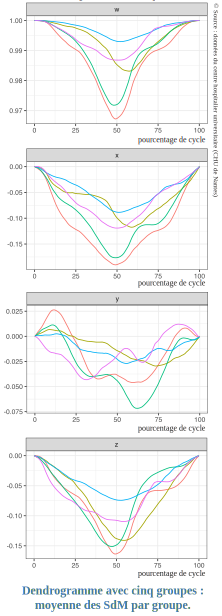
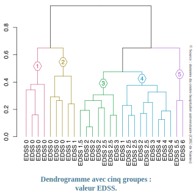

Le projet MS-CSI vise à explorer les relations entre la charge lésionnelle mesurée par IRM et la signature de marche (SdM) produite par le dispositif eGait conçu par le laboratoire de mathématiques Jean Leray (LMJL) et l’entreprise UmanIT, tous deux basées à Nantes.
Ce rapport est construit en trois parties:
- Dans un premier temps, nous rappelons le contexte et les objectifs du projet en reprenant le résumé de l’appel à projet.
- Dans un second temps, nous procédons au bilan de l’activité autour du projet MS-CSI.
- Dans un troisième temps, nous détaillerons les développements autour du dispositif eGait qui sont connexes au projet MS-CSI.
Résumé
Rationnel du projet
Au cours de leur vie, 75% des patients atteints de la Sclérose en Plaques (SEP) se plaignent de mobilité réduite provoquée par des déficits ambulatoires. En pratique clinique, le déficit ambulatoire est évalué à l’examen clinique en mesurant le temps nécessaire pour parcourir huit mètres (T25FW), le périmètre de marche inclus dans le score EDSS et en estimant gràce à l’IRM le volume lésionnel cérébral. Ces indicateurs ne permettent toutefois pas de dissocier les différents troubles de la marche (moteur, spasticité, équilibre, etc.).. Le développement et l’essor des objets connectés constituent une opportunité unique de collecter des informations quantitatives sur la santé du patient, précises, sans contrainte ni stress pour le patient et peu couteuses. L’entreprise UmanIT et le laboratoire de mathématiques Jean Leray ont développé un dispositif médical associé à une méthodologie statistique pour générer une signature de marche (SdM) individuelle à l’aide d’un capteur de mouvement utilisé en examen clinique lors du T25FW. Cette SdM se présente sous la forme d’une courbe de rotation de la hanche au cours du temps.
Objectifs scientifiques
Nous proposons de nous concentrer sur l’évaluation de l’atteinte de la marche. Les contributions originales de notre projet sont (i) de proposer un dispositif qui requiert un équipement minimal pour obtenir la SdM individuelle du patient lors de son examen clinique et (ii) d’étudier l’association entre cette SdM et la charge lésionnelle mesurée par IRM. Le projet s’articule autour de 3 objectifs principaux. L’objectif 1 visera à évaluer l’association entre SdM et charge lésionnelle mesurée par IRM. L’objectif 2 sera d’établir des profils type de SdM en fonction de la charge lésionnelle observée par circuit et de la sévérité de la maladie mesurée via les scores EDSS et MSFC. Enfin, notre dernier objectif sera d’expliquer et prévoir le volume lésionnel par circuit, ou l’appartenance aux groupes établis en Objectif 2, à partir des profils type de SdM.
Méthodologie
Nous avons pris contact avec la responsable scientifique de la cohorte OFSEP-HD de l’observatoire français de la SEP afin d’intégrer la pose du capteur lors du T25FW effectué par ces patients sur les sites de Nantes et de Rennes (100 patients prévus). En plus des données minimales recueillies dans le cadre des protocoles standard OFSEP, nous intègrerons des séquences IRM permettant d’évaluer la charge lésionnelle médullaire. Pour l’objectif 1, nous aurons recours à des méthodes statistiques dites d’intégration de données explorant l’association entre jeux de données hétérogènes mesurant la même pathologie. L’objectif 2 sera réalisé en intégrant plusieurs approches statistiques de classification non supervisée pour données fonctionnelles ou non. Enfin, nous ajusterons des modèles de régression à variable explicative fonctionnelle ou des méthodes de classification supervisée pour répondre à l’objectif 3. Le verrou essentiel associé à ces 3 objectifs sera d’adapter les méthodes statistiques existantes aux données volumineuses et complexes issues de la SdM: quaternions évoluant autour du temps.
Applications attendues
L’utilisation de méthodes avancées d’IRM encéphalique et médullaire non pratiquées en clinique permet l’évaluation de la charge lésionnelle par circuit fonctionnel. Notre ambition est de proposer des profils type de SdM construits à partir de la charge lésionnelle mesurée par IRM et de faciliter le diagnostic du handicap ambulatoire des patients en identifiant le profil type dont il se rapproche le plus. Ce travail pourrait avoir un impact fort en fournissant, dès l’examen clinique, une évaluation spécifique des troubles de la marche permettant ainsi aux neurologues de proposer un suivi adapté le plus tôt possible, limitant ainsi les risques d’aggravation, une des principales craintes des patients atteints de la SEP.
Consortium
L’équipe scientifique derrière le projet MS-CSI est pluri-disciplinaire et peut être répartie en 4 composantes dont les membres sont listés dans les tableaux suivants.
| Identité | Qualification | Affiliation |
|---|---|---|
| Aymeric STAMM | Ingénieur de recherche en Statistiques | CNRS (LMJL) |
| Lise BELLANGER | Maitre de conférence en Statistiques | Univ. Nantes (LMJL) |
| Pierre DROUIN | Doctorant CIFRE | UmanIT, Univ. Nantes (LMJL) |
| Identité | Qualification | Affiliation |
|---|---|---|
| David-Axel LAPLAUD | Neurologue | CHU Nantes |
| Pierre-Antoine GOURRAUD | Praticien hospitalier en biologie cellulaire | CHU Nantes |
| Laetitia BARBIN | Chef de projet translationnel | CHU Nantes, CIC Neurologie |
| Mélinda MOYON | Technicienne d’Etudes Cliniques | CHU Nantes, CIC Neurologie |
| Alina GAULTIER | Neuroradiologue | CHU Nantes |
| Identité | Qualification | Affiliation |
|---|---|---|
| Anne KERBRAT | Neurologue | CHU Rennes, INRIA Empenn |
| Benoit COMBES | Post-doctorant | INRIA Empenn |
| Elise BANNIER | Physicienne IRM | CHU Rennes, INRIA Empenn |
| Jean-Christophe FERRE | Neuroradiologue | CHU Rennes, INRIA Empenn |
| Gilles EDAN | Neurologue | CHU Rennes |
| Identité | Qualification | Affiliation |
|---|---|---|
| Laurent CHEVREUIL | Directeur | UmanIT |
| Fanny DOISTAU | Directeur e-santé | UmanIT |
| Vincent GRAILLOT | Ingénieur R&D | UmanIT |
| Pierre DROUIN | Doctorant CIFRE | UmanIT, Univ. Nantes (LMJL) |
Bilan d’activité
Les conditions sanitaires actuelles imposées par la propagation du coronavirus ont entrainé une priorisation des projets de recherche au CHU qui n’a pas encore permis la mise en oeuvre de l’étude clinique prévue dans le projet MS-CSI. A ce titre, le projet n’a officiellement pas encore débuté puisqu’il n’est pas concevable de valider ou réfuter des hypothèses scientifiques sans données à l’appui.
Nous sommes sur le point de finaliser le protocole pour l’étude clinique qui sera bientôt soumis au Comité de Protection des Personnes (CPP) pour validation. Le projet MS-CSI a donc subi une modification importante de calendrier. Les nouvelles dates charnières du projet sont:
- Fin avril 2021 / début mai 2021: Soumission du protocole de recherche non-interventionnelle (RNI).
- Début septembre 2021: Début des inclusions de patients et donc du recueil des données.
- Début janvier 2022: Recrutement du chercheur chargé d’analyser les données et de répondre aux objectifs du projet.
Développements connexes à MS-CSI
Dans l’attente du démarrage de l’étude clinique prévue pour MS-CSI, nous avons :
eu l’opportunité de mener une étude ancillaire à l’étude clinique MYO portée par Prof. D.A. Laplaud et P.A. Gourraud au CHU de Nantes;
obtenu un financement de la part de l’Agence pour les Mathématiques en Interaction avec l’Entreprise et la Société (AMIES) qui nous a permis :
de monter l’étude clinique eMSGait destinée à améliorer le dispositif eGait dans le contexte de la SEP;
de recruter un stagiaire de M2 Ingénierie Statistique autour du dispositif eGait.
Grâce à ces opportunités, nous avons déjà atteints les objectifs préliminaires suivants:
Finalisation et stabilisation du dispositif eGait par le dépôt d’une demande de brevet (Drouin, Bellanger, et al. 2021).
Utilisation du dispositif eGait dans le cadre d’une étude ancillaire greffée à l’étude clinique MYO avec pour objectif d’établir des groupes de patients ayant des profils de signature de marche différents. Les résultats de cette étude ont été valorisés par deux publications:
- Une première publication à visée grand public dans la collection Bibliothèque Tangente (Bellanger et al. 2021).
- Une seconde publication dans l’International Journal of Approximate Reasoning qui vient d’être soumise (Drouin, Stamm, et al. 2021).
Utilisation de la signature de marche produite par eGait pour détecter des troubles de la marche que nous avons simulés.
Lancement d’une étude de fiabilisation, robustesse et reproductibilité de la signature de marche par un prestataire externe.
Nous estimons qu’il est important de porter à votre connaissance l’ensemble de ces points qui sont autant d’éléments qui laissent à penser que la signature de marche pourrait constituer un excellent biomarqueur pour la détection de troubles de la marche asymptomatiques.
Le premier point ne peut être développé dans ce rapport par clause de confidentialité. Nous vous proposons dans les sous-sections suivantes quelques détails sur chacun des autres points.
Construction de groupes de patients au profil de signature de marche différents
Le dispositif eGait a été testé pour produire la SdM de 27 patients atteints de sclérose en plaques (SEP) dans le cadre d’une étude au CHU de Nantes (Loire-Atlantique). Nous avons ensuite élaboré une méthode statistique dite de classification semi-supervisée par compromis afin d’établir des groupes de patients au profil de SdM similaire tout en garantissant une certaine cohérence intra-groupe sur le niveau de handicap global des patients.
La figure suivante présente les SdM moyennes par groupe:
qui nous permet de bien apprécier les différents profils de SdM en fonction des groupes identifiés.
La figure suivante résume le résultat de la classification sous la forme d’un arbre, appelé dendrogramme, dont la longueur des branches verticales rend compte de la distance (basée sur leur SdM et handicap global) à laquelle les individus ou groupes d’individus s’aggrègent.

En coupant le dendrogramme à une certaine hauteur jugée pertinente, on crée ici naturellement cinq groupes constitués de patients ayant des SdM (troubles de la marche) similaires et des niveaux de handicap globaux (EDSS) similaires.
Un point en particulier attire l’attention: le groupe 1 est constitué de patients dont l’état de santé général est jugé « proche » de celui d’un individu en parfaite santé alors que le groupe 2 contient à la fois de tels individus mais aussi des individus de score EDSS 1. La SdM réussit dans cette étude à déceler que des individus en apparente parfaite santé (EDSS 0) commencent à avoir une dégradation de leur marche (groupe 2). C’est ici un premier élément de réponse qui tendrait à faire penser que l’équipe est sur la bonne voie pour détecter des troubles de la marche avant qu’ils ne soient perceptibles.
Détection de troubles de marche simulés
Nous constituons une base de sujets sains sur lesquels nous recueillons les données de marche issues du capteur dans des conditions expérimentales similaires maitrisées sous deux conditions de marche:
- marche libre;
- marche avec le genou droit bloqué par une attèle.
Pour chaque sujet et chaque condition de marche, nous avons utilisé le dispositif eGait pour calculer la signature de marche correspondante.
Nous avons ensuite élaboré et testé un certain nombre de méthodes de clustering pour classifier à l’aveugle les signatures de marche en deux groupes distincts. L’objectif est double:
- comprendre si la signature de marche est en mesure de détecter ce trouble de marche spécifique que nous avons simulé;
- quelles sont les méthodes statistiques, s’il y en a, qui nous permettent une telle détection.
Cette étude est toujours en cours (augmentation de la taille de la base). Cependant, les premiers résultats montrent que la signature de marche contient bien l’information nécessaire pour retrouver les deux conditions de marche.
Fiabilisation, robustesse et reproductibilité de la signature de marche
Un élément clé pour aller dans cette direction est de réaliser une étude de fiabilité, reproductibilité et robustesse de la SdM qui s’articule autour de deux axes fondamentaux: l’impact du capteur sur la SdM d’une part, la sensibilité et la reproductibilité de la SdM elle-même d’autre part. Nous avons confié cette mission à un prestataire externe. Les deux sous-sections suivantes détaillent les questions critiques auxquelles il faut répondre sur chacun des deux axes.
L’effet capteur sur le calcul de la SdM: robustesse, variabilité
Deux capteurs différents produisent-ils la même SdM ? La SdM est-elle robuste à de petite variations dans le placement du capteur à la ceinture ? Quelle est la tolérance sur la position du capteur? Les SdM obtenues sur des données recueillies par des personnes différentes (donc positionnement du capteur potentiellement différent) sont-elles similaires ? Comment évaluer l’impact des mises à jour de la puce du capteur par le fabricant sur la SdM ?
Analyse de sensibilité, de reproductibilité de la SdM
La SdM d’un même individu est-elle similaire lorsqu’elle est produite par deux jeux de données recueillis le même jour ? Des jours différents ? Dans le même environnement ? Un environnement différent ? Combien de fois faut-il répéter les mesures pour répondre à ces questions ? Est-elle similaire entre deux individus n’ayant pas de troubles de la marche ? Combien d’individus faut-il pour répondre à cette question ?
Remerciements
Toute l’équipe scientifique tient à remercier grandement
- les généreux donateurs qui ont permis à ce projet de voir le jour;
- le panel de reviewers scientifiques qui a accordé sa confiance dans le mérite scientifique de l’approche proposée;
- la fondation ARSEP qui a su nous mettre tous en contact pour faire avancer nos connaissance sur la sclérose en plaques.
References
Bellanger, Lise, Laurent Chevreuil, Pierre Drouin, David-Axel Laplaud, and Aymeric Stamm. 2021. “Détecter Les Troubles de La Marche.” Bibliothèque Tangente 73: 94–101.
Drouin, Pierre, Lise Bellanger, Aymeric Stamm, Laurent Chevreuil, and Vincent Graillot. 2021. Méthode et dispositif de détermination d’un cycle de marche. FR2100309, issued January 13, 2021.
Drouin, Pierre, Aymeric Stamm, Laurent Chevreuil, Vincent Graillot, Laetitia Barbin, Pierre-Antoine Gourraud, David-Axel Laplaud, and Lise Bellanger. 2021. “Compromise-Based Clustering for Quaternion Time Series: Application to Gait Analysis in Multiple Sclerosis.” International Journal of Approximate Reasoning – Special Issue on Time Series Clustering and Classification, Submitted.